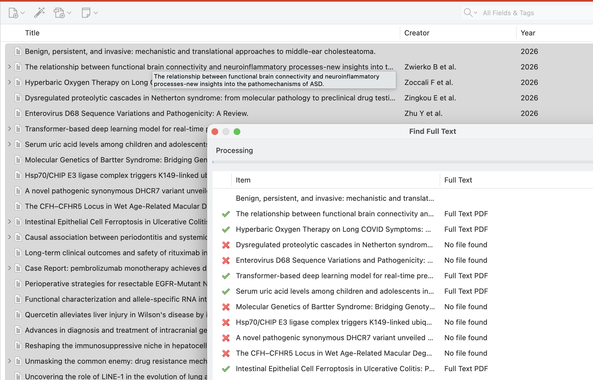

Export a Reference Cache to Zotero
This workflow turns a checked-in public reference cache into a Zotero collection, asks Zotero to find available PDFs, and then inventories the resulting attachments without putting closed manuscripts into the project repository.
The three stores remain separate:
| Store | Purpose | Safe to commit? |
|---|---|---|
Project references_cache |
Reproducible public validation evidence | Yes |
| Zotero library | User-managed references and PDF attachments | No |
| Private research cache | Extracted user-library text for agent context | No |
Normal validation reads only the first store.
1. Export metadata from the public cache
Run the exporter from the linkml-reference-validator checkout. For dismech:
uv run linkml-reference-validator cache export \
--cache-dir /Users/cjm/repos/dismech/references_cache \
--needs-full-text \
--output /Users/cjm/Downloads/dismech-zotero.json
--needs-full-text is the default. It excludes cache entries that already have
full text, excludes non-publication identifiers, and deduplicates by normalized
DOI and then PMID. The CSL JSON output uses an explicit metadata allowlist:
- title and authors;
- journal and year;
- DOI; or
- PMID and its public PubMed URL.
It never contains cached article text, excerpts, provenance, PDFs, local paths,
or private-cache data. The command refuses to replace an existing output file;
use --force only after checking the destination. Use --all if you explicitly
want eligible references that already contain full text.
2. Import the file into Zotero
In Zotero:
- Choose File → Import.
- Choose A file.
- Select
dismech-zotero.json. - Keep the imported records in a project-specific collection such as dismech.
CSL JSON is a standard format supported by Zotero. Importing the file adds only bibliographic records; it does not copy anything from the validator's caches.
3. Ask Zotero to find PDFs
Select one or more top-level journal articles in the center item list, right-click the selection, and choose Find Full Text. It is a built-in Zotero command, not a plugin.

The command appears for an eligible parent item that has a DOI and does not already have a file attachment. It may also be unavailable in a group library where files cannot be added. If it is absent, first test a single article in your personal library and confirm that its DOI field is populated.
For a large import, start with a modest batch rather than all records at once. Publishers can temporarily rate-limit repeated requests, and a later retry may find additional files. Zotero reports Full Text PDF or No file found for each attempted item.
4. Inventory the enriched Zotero library
Once Zotero finishes, scan the project cache again:
uv run linkml-reference-validator cache enrich \
--provider zotero \
--cache-dir /Users/cjm/repos/dismech/references_cache \
--dry-run
This read-only scan matches exact DOI, PMID, or PMCID identifiers and reports which cached references now have usable Zotero text or PDF attachments. It does not invoke Find Full Text and does not modify Zotero.
After reviewing the matches, materialize them into the separate private research cache:
uv run linkml-reference-validator cache enrich \
--provider zotero \
--cache-dir /Users/cjm/repos/dismech/references_cache \
--apply
Apply mode leaves references_cache unchanged. Private content goes to
~/.cache/linkml-reference-validator/private by default with owner-only
permissions. Agents may inspect it for context, but validation cannot use it as
evidence.
5. Validate reproducibly
Run validation normally. Results remain reproducible because the validator reads the public project cache and accepts only public full-text provider results. Neither the contents of Zotero nor the machine-specific private cache affect validation.